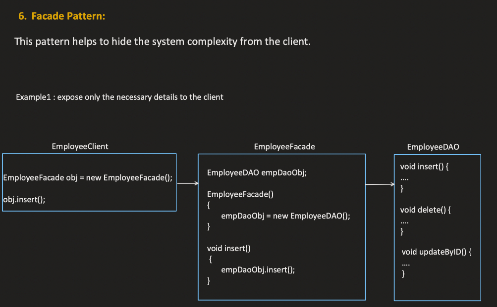
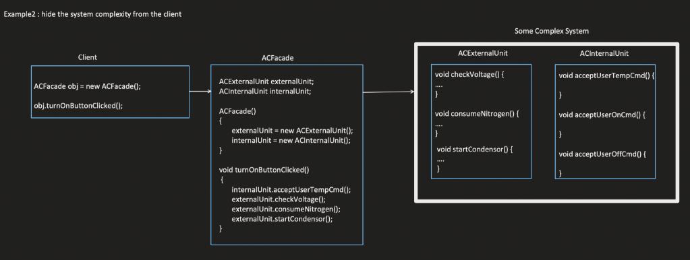

Facade Design Pattern
Key Components:
+-----------------------+
| Client (Main) |
+-----------------------+
|
v
+-----------------------+
| Facade | <------ is-a
+-----------------------+
|
v
+------------------------+ +-----------------------+
| Subsystem A | | Subsystem B |
+------------------------+ +-----------------------+
| |
v v
+------------------+ +-------------------+
| Class A1, A2 | | Class B1, B2 |
+------------------+ +-------------------+
Key Relationships:
- has-a: The Facade has access to multiple subsystems (
Subsystem A, Subsystem B).
- is-a: The Facade represents the client’s simplified interface to these subsystems.
Why It’s Required and When to Use:
- Why: The Facade Design Pattern simplifies complex systems by providing a unified interface. It hides the complexities of subsystems and allows the client to interact with a single, cohesive interface.
- When to Use: Use a facade when you need to simplify interactions with a complex system, or when clients should not be exposed to the entire functionality of subsystems.


Example Usage:
Real-Life Example - Home Theater System:
- Client (Main): The user who interacts with the home theater system.
- Facade: A simplified
HomeTheaterFacade class that controls all components like Amplifier, DVD Player, Projector, and Lights.
- Subsystems: Individual components such as
Amplifier, DVD Player, and Projector, which provide the actual functionality but are too complex for the user to manage independently.
Example - Home Theater:
- Client: The user who wants to turn on the home theater.
- Facade:
HomeTheaterFacade which provides methods like startMovie() and endMovie().
- Subsystems: The classes that handle individual tasks like turning on the amplifier, setting up the projector, and lowering the lights.
Core Principle and Relationships:
Hide Complexity:
- Facade hides the complexity of interacting with multiple subsystems. Instead of the client manually interacting with each subsystem (e.g., turning on the amplifier, DVD player, etc.), the client only interacts with the facade.
Not Mandatory for the Client:
- Direct Access: The client can directly access subsystems if needed. The facade just provides an optional, simpler interface but does not force its usage.
Facade Using Other Facades:
- A facade can delegate tasks to another facade. For example, a
ComputerFacade might use a HardDriveFacade and a MemoryFacade to interact with hardware subsystems.
Facade vs. Proxy:
| Facade |
Proxy |
| Simplifies and hides complexity. |
Controls access to an object. |
| Focuses on interaction with multiple subsystems. |
Focuses on controlling or restricting access. |
| Can manage multiple subsystems at once. |
Usually works with a single object or service. |
- Facade is about providing a simpler interface for complex systems.
- Proxy controls access to an object, typically to add functionality like lazy initialization, logging, or security.
Facade vs. Adapter:
| Facade |
Adapter |
| Provides a unified, simpler interface for multiple subsystems. |
Converts one interface to another so that incompatible systems can work together. |
| Hides the complexity of subsystems without changing them. |
Adapts the interface of one class to make it compatible with another class. |
| Goal: Simplify. |
Goal: Adapt. |
- Facade is about simplifying interactions with multiple classes.
- Adapter is about converting one interface to make it compatible with another interface.
Real-World Use Cases:
Home Theater Systems:
- A
HomeTheaterFacade simplifies the process of turning on the TV, setting the sound system, and adjusting lighting.
Complex Library Management:
- In complex systems like software libraries, a facade can simplify the interface, allowing developers to use a high-level API without worrying about the underlying details.
E-commerce Systems:
- A facade can simplify the process of placing an order by interacting with multiple subsystems like
Inventory, Payments, and Shipping.
Key Benefits:
Hides Complexity:
- Facade simplifies complex systems by hiding their internal workings and providing a clean, easy-to-use interface for clients.
Flexibility:
- The client can choose to use the facade or directly interact with subsystems as needed, providing more flexibility.
Decoupling:
- The facade helps decouple the client from the subsystem implementations. This makes the system easier to maintain and change without affecting the client.
Key Takeaways:
Simplification:
- Facade simplifies the interaction between the client and the complex subsystems.
Optional Use:
- Clients can interact with the facade or directly with the subsystems, making it an optional convenience layer.
Subsystem Management:
- The facade doesn’t alter subsystems but simply provides a more approachable interface.